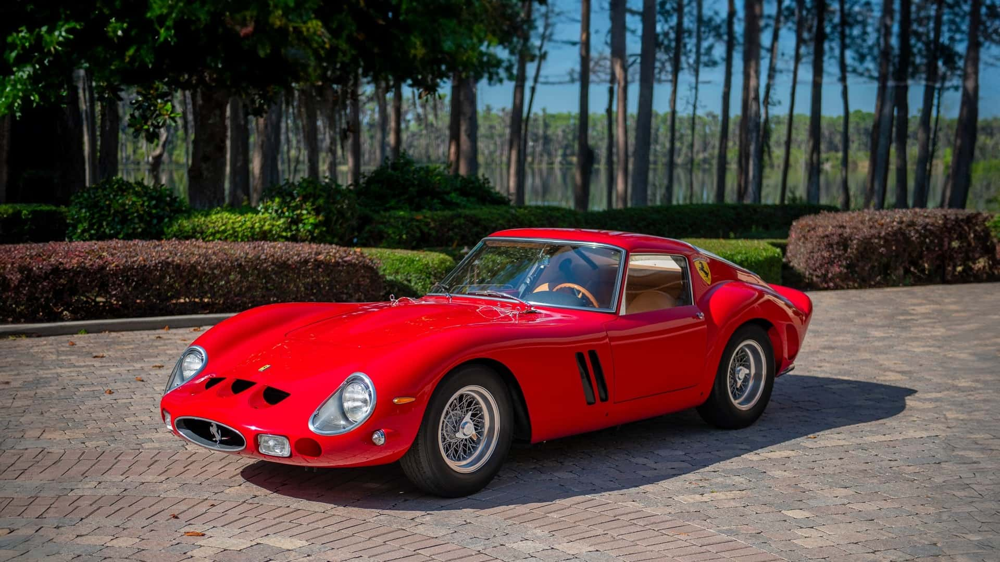

MOTORACE GT
MENÚ

¡Bienvenido a la actual mejor página sobre todo tipo de vehículos en la que encontraras toda la información necesaria para volverte un maestro del motor!
Motores en V
Motores en línea
Motores Bóxer